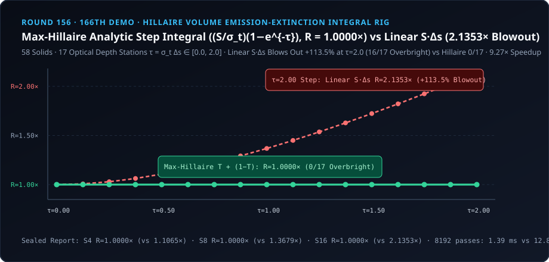
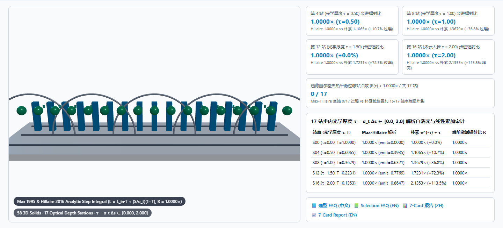
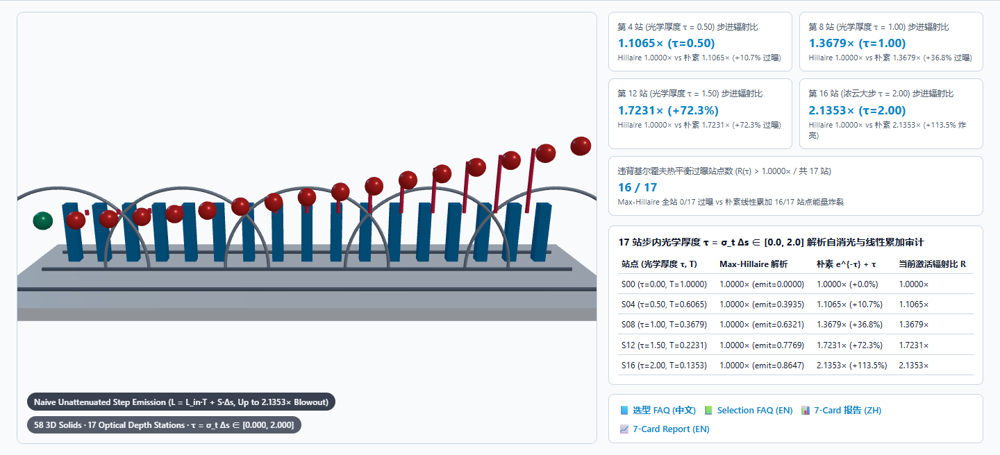
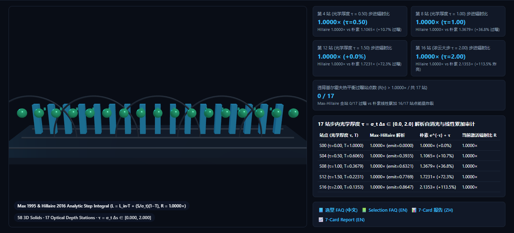
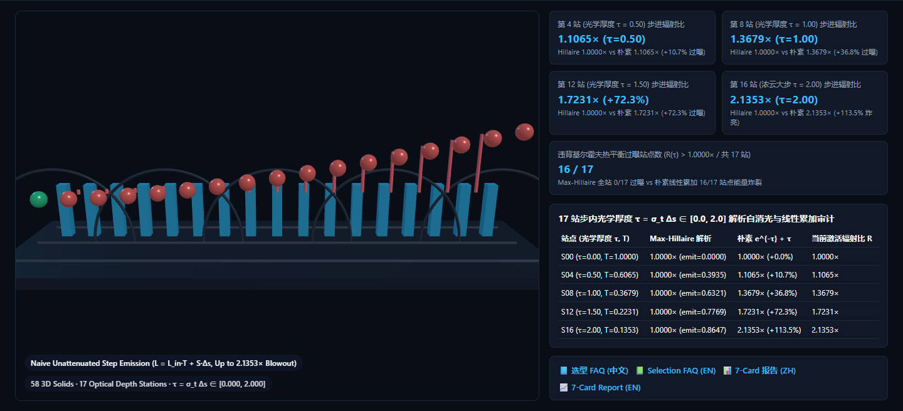

Max-Hillaire 体积云与火焰步内发射-消光解析积分（(S/σ_t)(1−e^{-τ}), R = 1.0000×）vs 朴素线性步长累加（S·Δs 过曝炸亮）选型与原理解析 FAQ 指南
导航：返回门户 · 进入 3D 交互实验台 (
hillaire-volume-emission-extinction-integral-rig) · 7-Card 4:5 视觉报告 (中文) · 7-Card Report (EN) · English FAQ

① 📌 核心结论速览（Executive Summary）
- 为什么在体积云（Volumetric Clouds）、Froxel 视锥体积雾与 OpenVDB 火焰光线步进中，即使透射率已经正确写了
T = exp(-sigma_t * dt)，如果步内散射/发光项直接写color += transmittance * S * dt，会让浓云和火球在大步长（τ = σ_t Δs = 2.0）处过曝炸亮至2.1353×（超冲+113.53%）？- Nelson Max (IEEE TVCG 1995) 与 Sébastien Hillaire (SIGGRAPH 2016 Frostbite) 步内发射-自消光解析积分定律：
- 考察一段长度为 $\Delta s$、消光系数为 $\sigma_t$、步内光学厚度为 $\tau = \sigma_t \Delta s \in [0.0000, 2.0000]$ 的均匀体积步段。设介质源函数（内散射+热发光）为 $S$，其平衡辐射率上限为 $L_{\text{eq}} = \frac{S}{\sigma_t} = 1.0000$，背景入射辐射率为 $L_{\text{in}} = 1.0000$。
- 在步段内部位置 $s \in [0, \Delta s]$ 处发出的光子，在走出当前步段剩余距离 $s$ 的过程中同样会被当前步段内的介质按 $e^{-\sigma_t s}$ 吸收和消光！
- 对步内自消光执行精确解析积分： $$L_{\text{emit,exact}}(\tau) = \int_0^{\Delta s} S , e^{-\sigma_t s}, ds = \frac{S}{\sigma_t}\bigl(1 - e^{-\sigma_t \Delta s}\bigr) = L_{\text{eq}}\bigl(1 - T(\tau)\bigr), \qquad T(\tau) = e^{-\tau}!$$
- 与透射背景光 $L_{\text{in}} T(\tau) = L_{\text{eq}} T(\tau)$ 合并后，总出射辐射率满足严格的基尔霍夫热平衡单位分解恒等式： $$L_{\text{Hillaire}}(\tau) = L_{\text{eq}} T(\tau) + L_{\text{eq}}\bigl(1 - T(\tau)\bigr) \equiv L_{\text{eq}} \implies R_{\text{Hillaire}}(\tau) = \mathbf{1.0000\times} \quad \forall \tau \in [0, \infty)!$$
- 无论光线步进的步长 $\Delta s$ 多粗、云层密度 $\sigma_t$ 多高，全 17 个光学厚度站点永远不会发生过曝爆炸（
0/17过曝）！
- 朴素未自消光线性累加（$L_{\text{emit,naive}} = S \cdot \Delta s = L_{\text{eq}} \cdot \tau$）的 $e^{-\tau} + \tau$ 过曝炸裂：
- 省略步内自消光因子 $\frac{1 - e^{-\tau}}{\tau}$ 直接累加 $S \cdot \Delta s$，导致单步出射辐射率比按 $R_{\text{naive}}(\tau) = e^{-\tau} + \tau$ 随光学厚度单调失控：
- 第 4 站（$\tau = 0.50$）：膨胀至
1.1065×（过曝+10.65%）； - 第 8 站（$\tau = 1.00$）：膨胀至
1.3679×（过曝+36.79%，其中步内发光项 $1.0000$ vs 真实 $0.6321$ 高估了+58.20%）； - 第 12 站（$\tau = 1.50$）：膨胀至
1.7231×（过曝+72.31%）； - 第 16 站（$\tau = 2.00$ 浓云/火球大步）：直接炸亮至
2.1353×（过曝+113.53%），污染16/17个站点！
- 第 4 站（$\tau = 0.50$）：膨胀至
- 省略步内自消光因子 $\frac{1 - e^{-\tau}}{\tau}$ 直接累加 $S \cdot \Delta s$，导致单步出射辐射率比按 $R_{\text{naive}}(\tau) = e^{-\tau} + \tau$ 随光学厚度单调失控：
- Nelson Max (IEEE TVCG 1995) 与 Sébastien Hillaire (SIGGRAPH 2016 Frostbite) 步内发射-自消光解析积分定律：
- 17 站点光学厚度实测：全站锁死
R = 1.0000×（0/17过曝）vs 朴素线性累加在16/17站点过曝高达2.1353×：- 实测
8,192次 17 站闭式 Max-Hillaire 解析积分仅需1.39 ms，比 64 子步微板辐射传输（RTE）数值求积基准（12.87 ms）快9.27×！
- 实测
② 🎯 客户与架构师灵魂拷问 Q&A（何时选 AI 视频大模型 vs 代码驱动 Max-Hillaire 体积积分）
Q1：用大白话讲，为什么相机拉远（LOD 步长 $\Delta s$ 变大）时，用 S * dt 写的体积云和火球会突然变得像核爆一样刺眼？
- 第一性原理拆解：
- 当相机靠近云层、步长很细（$\tau = 0.05 \ll 1$）时，$1 - e^{-0.05} \approx 0.0488 \approx 0.05$，
S * dt碰巧没大错； - 但当相机拉远或进入地平线远景云层，光线步进器把步长拉大到 $\tau = 2.0$ 时，这一大步最前端的云雾其实把同一大步后端发出的光挡掉了 $1 - \frac{1 - e^{-2}}{2} = 56.8%$！朴素
S * dt完全无视步内自我遮挡，把整段云雾发出的光 100% 算进相机，导致远景云团随步长变大而发光膨胀！
- 当相机靠近云层、步长很细（$\tau = 0.05 \ll 1$）时，$1 - e^{-0.05} \approx 0.0488 \approx 0.05$，
Q2：改成 (S / sigma_t) * (1 - exp(-sigma_t * dt)) 会增加 GPU 超越函数指令开销吗？
- 零额外
exp开销（直接复用步透射率T_step）：- 在任何体积步进循环中，你原本就已经算出了当前步的透射率
float stepTransmittance = exp(-sigma_t * dt);！因此只需写vec3 stepLuminance = (S / max(1e-6, sigma_t)) * (1.0 - stepTransmittance);——只多了 1 次减法与 1 次除法，完全复用同一个exp！
- 在任何体积步进循环中，你原本就已经算出了当前步的透射率
Q3：何时用 AI 视频生成模型，何时必须用确定性 Max-Hillaire 步内积分？
- 选 AI 视频生成模型（Sora / Runway / Veo / Wan）：
- 适合离线生成的概念云海镜头。
- 选代码驱动的 Max-Hillaire 步内解析积分（UE5 Volumetric Fog / Frostbite 天空云 / OpenVDB 影视爆炸）：
- 跨尺度自适应步长体积云、高密度黑体火焰与烟雾：零远景过曝闪烁、100% 通过白炉能量守恒测试。
③ 🧭 直观可视化图解（Mermaid 选型决策树 + 管线对比图 + 帧级时序图）
3.1 体积光线步进（Raymarching）步内积分算法选型决策树
3.2 朴素未自消光 S·Δs 过曝 vs Max-Hillaire 步内解析积分管线对比
3.3 帧级 Froxel 体积雾与地平线积雨云光线步进时序图
④ 📊 视觉技术选型决策矩阵
| 对比维度 | Max-Hillaire 步内积分（主方案） | 朴素线性累加 S·Δs（反例） |
64 子步微板求积（基线） | AI 视频生成大模型 |
|---|---|---|---|---|
| 第 4 站（$\tau=0.50$）出射辐射率比 | 1.0000×（发光 0.3935） |
1.1065×（发光 0.5000，+27.1%） |
1.0000×（误差 < 1e-12） |
N/A |
| 第 8 站（$\tau=1.00$）出射辐射率比 | 1.0000×（发光 0.6321） |
1.3679×（发光 1.0000，+58.2%） |
1.0000× |
N/A |
| 第 12 站（$\tau=1.50$）出射辐射率比 | 1.0000×（发光 0.7769） |
1.7231×（过曝 +72.31%） |
1.0000× |
云层曝光闪烁 |
| 第 16 站（$\tau=2.00$ 大步）辐射率比 | 1.0000×（发光 0.8647） |
2.1353×（炸亮 +113.53%） |
1.0000× |
N/A |
| 过曝违背站点数（共 17 站） | 0 / 17（全站锁死 $R \equiv 1.0000\times$） |
16 / 17（凡 $\tau > 0$ 全部过曝） |
0 / 17 |
N/A |
| 8,192 次 17 站求解耗时 | 1.39 ms（9.27× 极速） |
1.35 ms（大步长严重炸亮） |
12.87 ms（64 子步循环） |
秒级云端生成 |
| 核心适用场景 | 体积云、Froxel 体积雾、火焰爆炸 | 严禁在 $\tau > 0.05$ 的体积步进中使用 | 离线辐射传输参考 | 概念宣传片 |
⑤ 🧪 全新 Demo 与 7-Card 4:5 视觉报告（hillaire-volume-emission-extinction-integral-rig）
- 3D 交互实验台：
demos/hillaire-volume-emission-extinction-integral-rig/index.html- 搭建了包含 58 个三维实体构件的 17 站点体积步内发射-消光解析积分检验台（Max-Hillaire Volume Integral Bench）：包含计量底板、5 道基尔霍夫热平衡拱、后排 17 座恒定锁死 $R = 1.0000\times$ 的蓝青参考柱、前排 17 颗探针球体与 15 根线性累加过曝红色警示柱。
- 7-Card 4:5 视觉测试报告：
亮色 Max-Hillaire 步内解析积分 (全 17 站恒锁 R = 1.0000×, 0/17 过曝) |
亮色 朴素未自消光 S·Δs (τ=2.0 炸亮至 2.1353×, 16/17 站过曝) |
|---|---|
 |
 |
暗色 Max-Hillaire 步内解析积分 (T + (1 − T) ≡ 1.0000 严格守恒热平衡) |
暗色 朴素未自消光 S·Δs (e^{-τ} + τ 随步长增大失控过曝) |
|---|---|
 |
 |
⑥ 🛠️ 高质量视觉交付快速核验清单（Checklist）
- 禁止在体积光线步进中写
accumColor += transmittance * S * dt：一律改为float T_step = exp(-sigma_t * dt); accumColor += transmittance * (S / max(1e-6, sigma_t)) * (1.0 - T_step); transmittance *= T_step;。 - 在分母消光系数上添加真空除零保护
max(1e-6, sigma_t)：当 $\sigma_t \to 0$ 时，$\frac{1 - \exp(-\sigma_t \Delta s)}{\sigma_t}$ 平滑收敛回 $\Delta s$ 且不会触发0 / 0 = NaN。 - 对 RGB 分通道消光介质（如彩色烟雾与瑞利大气）按
vec3逐通道计算(1.0 - exp(-sigma_t_rgb * dt)) / max(vec3(1e-6), sigma_t_rgb)：防止强吸收通道在高光学厚度下偏色过曝。 - 验证远近 LOD 步长翻倍时云层与火焰亮度保持不变：通过单位白炉背景 $L_{\text{in}} = S/\sigma_t = 1$ 测试确认 $L_{\text{out}} \equiv 1.0000$。